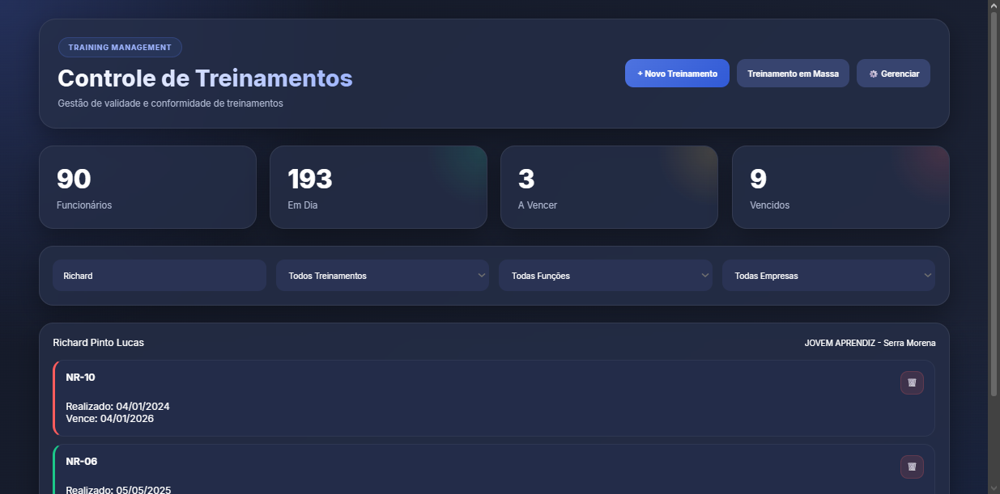
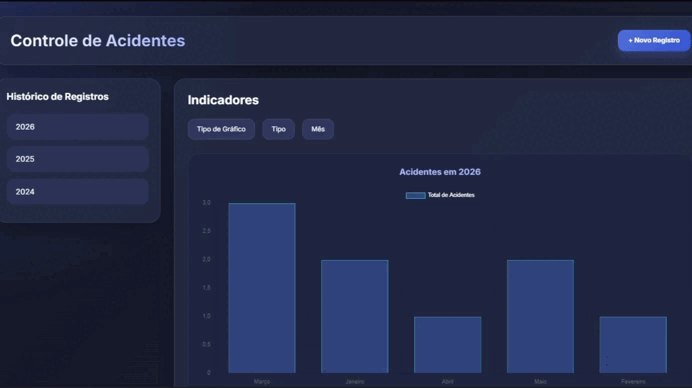
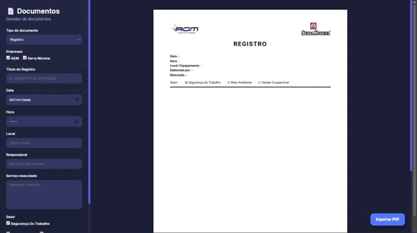

Controle de Treinamentos
Cadastro, consulta e acompanhamento de treinamentos, com controle de vencimentos, status e filtros por colaborador, empresa e função.
Sistema de gestão de Segurança, Meio Ambiente e Saúde desenvolvido para organizar treinamentos, EPIs, acidentes, desvios, documentos e indicadores em um só lugar.

O SIGMA SMS foi criado para centralizar informações importantes do setor de Segurança do Trabalho, facilitando o controle de dados, registros e indicadores usados no dia a dia.

Cadastro, consulta e acompanhamento de treinamentos, com controle de vencimentos, status e filtros por colaborador, empresa e função.

Visualização de indicadores, gráficos e históricos de ocorrências, facilitando análises e ações preventivas.

Criação rápida de listas de presença, registros fotográficos, DDS e outros documentos com geração automática em PDF.

Controle de solicitações de EPIs e uniformes, organizando pedidos, entregas, tamanhos, colaboradores e status.

Gestão de extintores com controle de localização, tipo, capacidade, vencimento de recarga e status operacional.

Registro e acompanhamento de desvios de área, com histórico, classificação e indicadores para apoiar ações corretivas.
No vídeo abaixo, apresento uma navegação prática pelo SIGMA SMS, mostrando os principais módulos do sistema e como eles ajudam na rotina do setor de Segurança do Trabalho.
Desenvolvi integralmente o SIGMA SMS, sendo responsável pelo planejamento, design da interface, programação frontend, integração com Firebase, geração de documentos em PDF e implementação dos dashboards e módulos de gestão.